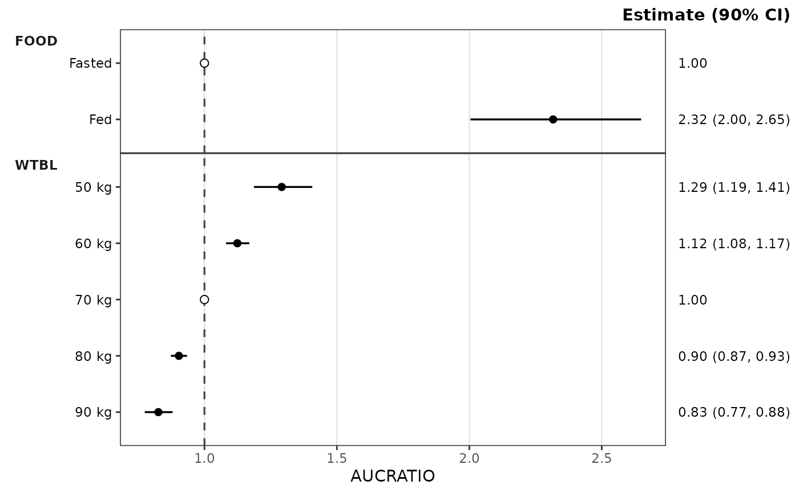
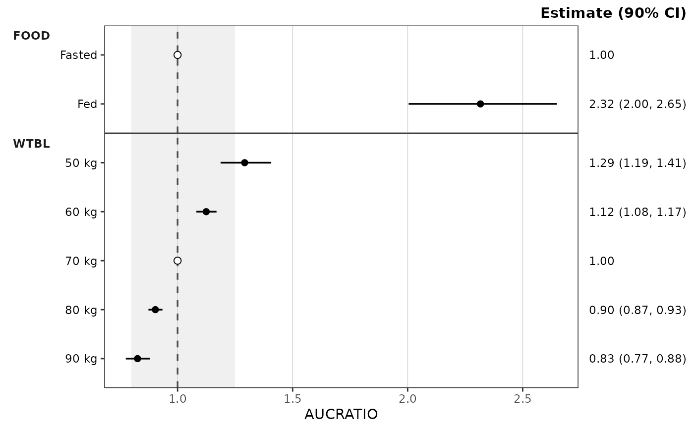
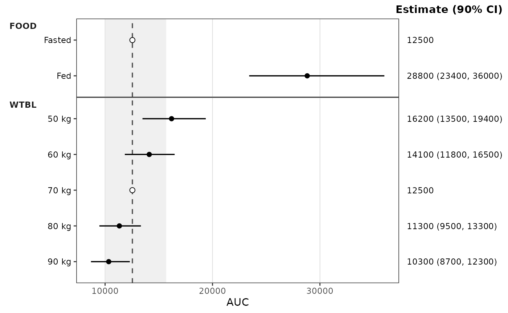
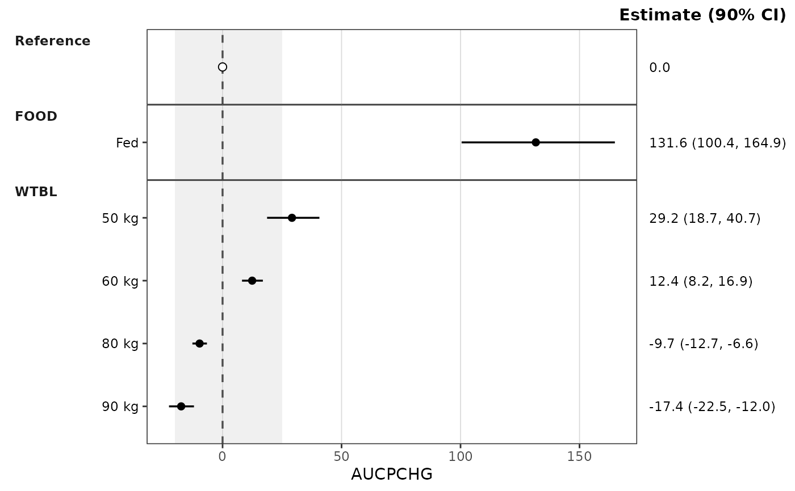
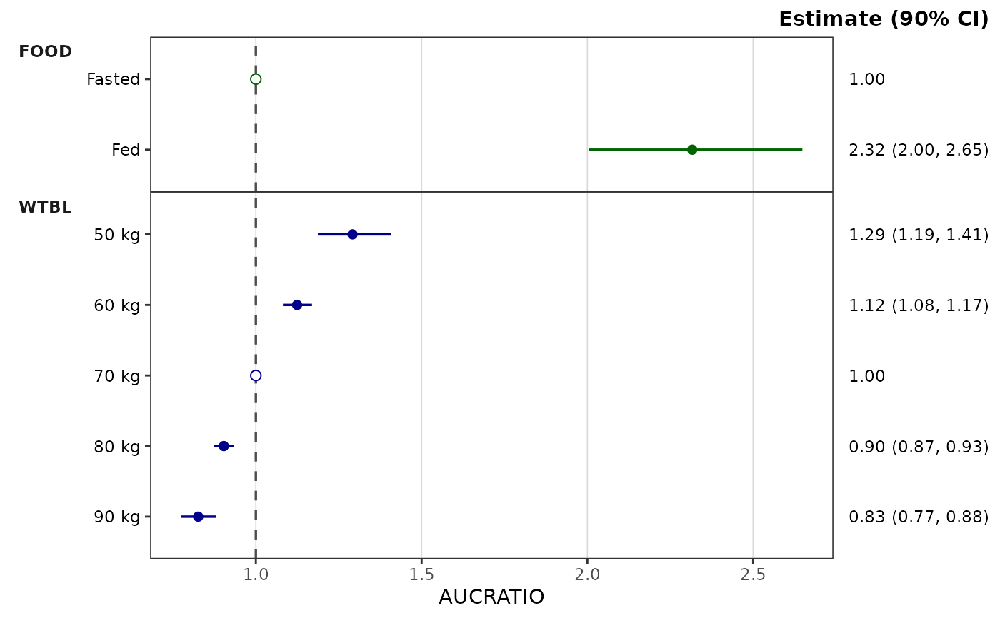
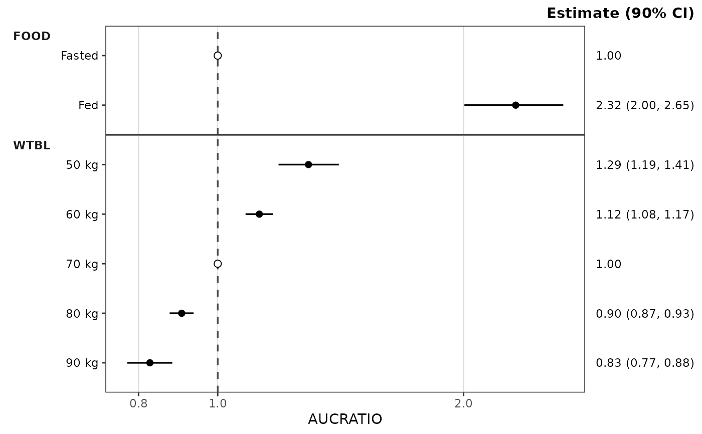
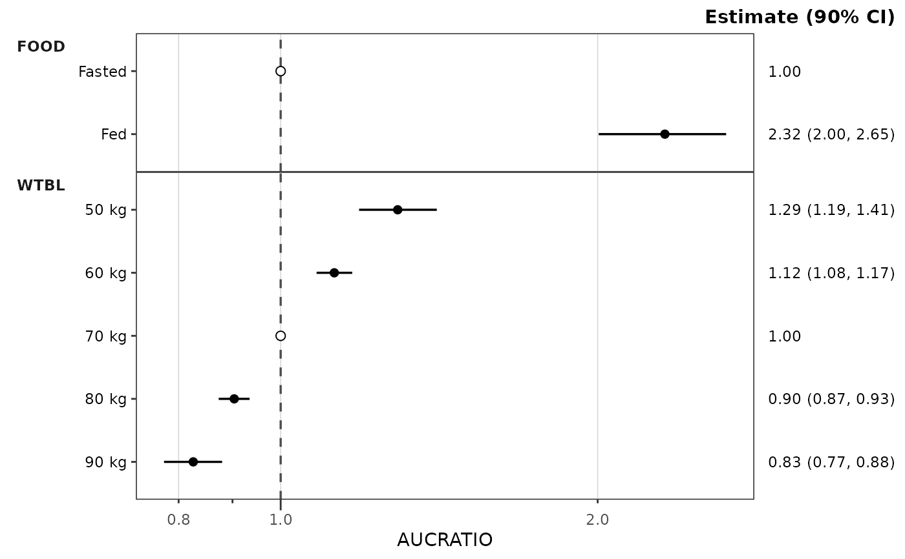
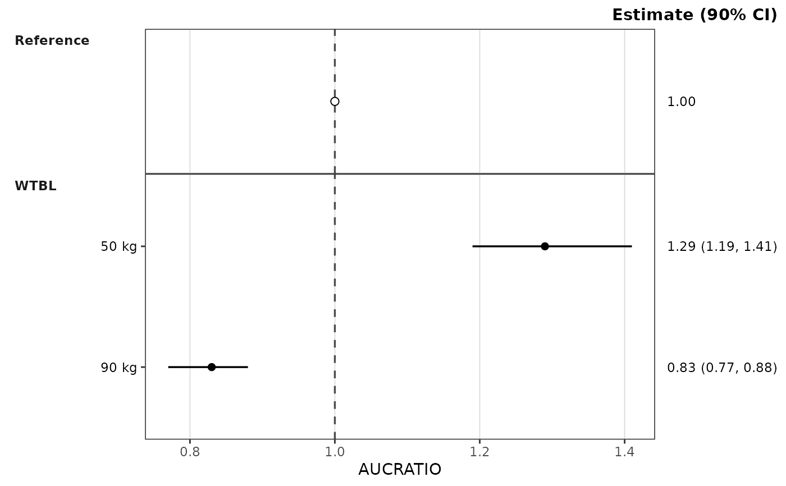

Constructs a covariate forest plot from a df_forest() result (or any
object satisfying the forest_stats contract). Renders per-row point
estimates with horizontal CI lines, optional shaded equivalence band, and
a vertical reference line, one facet row per covariate name. The
est_label, lo_label, and hi_label columns are assembled into the
right-hand secondary y-axis text ("1.29 (1.19, 1.41)") under a header
built from the container's ci (e.g. "Estimate (90% CI)"), so each
row's estimate sits beside its point. The header is the plot subtitle,
right-aligned so it sits on the top edge of the panels above the column;
change it with + ggplot2::labs(subtitle = "Ratio (90% CI)"). The
rendered metric labels the x-axis, and the plot has no title by default.
Rows are drawn in the order they appear in stats$stats, top to bottom
(see the "Row order" section of df_forest()); reorder that frame to
change the plot. Each row is its own y position, so covariate level
labels may repeat across panels (Low / High under two covariates).
The layout column selects the rows for the chosen reference layout (see
ref_layout).
Rows flagged is_ref (the reference copies in each covariate panel, or the
reference panel) draw through the ref_point style role
(an open circle by default) and show the point estimate alone in the
estimate column, since their CI collapses onto the estimate. A row whose
level label repeats its covariate name (the reference panel) has no
left-axis tick or label, since the strip already carries the name.
Returns a plain ggplot object so callers can compose additional layers,
themes, and scales with the standard + operator.
Most users will reach this function indirectly via plot_forest().
Call plot_build_forest() directly when working from a manually-
constructed or cached forest_stats object — for example, plotting a
precomputed result from disk or a custom pipeline that produces
compatible columns and config.
Usage
plot_build_forest(
stats,
metric = NULL,
style = NULL,
ref = "reference",
ref_band = NULL,
ref_band_type = c("multiplicative", "additive", "absolute"),
ref_layout = NULL,
show_rep = FALSE
)Arguments
- stats
A
forest_statsobject (typically the output ofdf_forest()), checked on entry; see "Building aforest_statsby hand" for the required columns and config.- metric
Character scalar identifying which value of
metric_name_varto render.plot_forest()renders one metric per call (no metric facet); the covariate name is the only facet dimension. IfNULL(default) andstats$statscontains exactly one unique value ofmetric_name_var, that value is used. IfNULLand multiple metrics are present, aborts and asks the caller to pick one.- style
A
ggstylekit::style_spec(); defaultstyle_forest(), which documents the roles, per-covariate coloring, and theme elements. Alternatives:style_forest_pmforest(),style_forest_coveffectsplot(),style_forest_pmxforest(),style_forest_pumas().- ref
The x-intercept of the vertical reference line: a numeric scalar,
NULLto suppress the line, or"reference"(default) to use the estimate of the metric's reference row (the row flaggedis_ref; exactly1for a ratio metric, the reference exposure for a raw metric). With"reference"and no reference row in the plotted metric, a warning is issued and no line is drawn.- ref_band
Length-2 increasing numeric vector (
ref_band[1] < ref_band[2]) giving the equivalence band, read according toref_band_type. DefaultNULL(no band).- ref_band_type
How
ref_bandis placed around the resolvedref:"multiplicative"(default) drawsref * ref_band, soc(0.8, 1.25)gives the bioequivalence bounds on a ratio or a raw exposure scale;"additive"drawsref + ref_band, soc(-10, 10)brackets a reference change of zero for a difference metric such as percent change from baseline;"absolute"drawsref_bandas given. The first two require a resolvedref; multiplicative limits must be positive.- ref_layout
"distributed"draws the reference row inside each covariate panel named incov_level_ref;"consolidated"draws it once in the reference panel at the top. DefaultNULL: distributed ifdf_forest()was givencov_level_reffor a covariate ofmetric, else consolidated.- show_rep
Logical. Display the number of replicates (the
ncolumn of the plotted rows) as a plot caption. Warns, and shows the range, when rows of the metric have different counts. DefaultFALSE. Acaptionset in the style is drawn instead, whatever this value.
Building a forest_stats by hand
Summaries computed elsewhere can be plotted by wrapping them with
pmx_stats() and subclass = "forest_stats" (see the last example).
stats needs one row per plotted point, in display order, with:
the metric, covariate name, and covariate level columns named in
config(character);est,lo,hi(numeric; the point and interval);est_label,lo_label,hi_label(character; the plotted text) andci_label(character; their combined form);is_ref(logical, noNA; the reference rows);layout:"both"for covariate rows,"consolidated"for a reference-panel row,"distributed"for a reference copy inside a covariate panel;optionally
n(integer draw count), needed only forshow_rep.
config needs metric_name_var, cov_name_var, and cov_level_var
(the column names), ci (in (0, 1), used in the header), and
sigdigits (a whole number >= 1). The object is checked when plotted.
Examples
stats <- df_forest(
data_sad_pkforest,
cov_level_ref = attr(data_sad_pkforest, "cov_level_ref")
)
plot_build_forest(stats, metric = "AUCRATIO")

plot_build_forest(stats, metric = "AUCRATIO", ref_band = c(0.8, 1.25))

# The same stats with the reference panel
plot_build_forest(stats, metric = "AUCRATIO", ref_layout = "consolidated")
 # Raw exposure: the line sits at the reference exposure and the band is
# 0.8 to 1.25 times it
plot_build_forest(stats, metric = "AUC", ref_band = c(0.8, 1.25))
# Raw exposure: the line sits at the reference exposure and the band is
# 0.8 to 1.25 times it
plot_build_forest(stats, metric = "AUC", ref_band = c(0.8, 1.25))

# Difference metric: percent change from the reference, with an additive
# band around the reference change of 0
pchg <- dplyr::filter(data_sad_pkforest, metric == "AUCRATIO") |>
dplyr::mutate(metric = "AUCPCHG", value = 100 * (value - 1))
plot_build_forest(df_forest(pchg), ref_band = c(-20, 25),
ref_band_type = "additive")

# Per-covariate coloring via the style's `colors` map
plot_build_forest(
stats, metric = "AUCRATIO",
style = style_forest(colors = c(FOOD = "darkgreen", WTBL = "darkblue"))
)

# Log x-axis: through the style, or compose with ggplot2 directly
plot_build_forest(stats, metric = "AUCRATIO", style = style_forest(logx = TRUE))

plot_build_forest(stats, metric = "AUCRATIO") +
ggplot2::scale_x_log10(guide = "axis_logticks")

# A summary built by hand
manual <- pmx_stats(
stats = data.frame(
metric = "AUCRATIO",
cov_name = c("Reference", "WTBL", "WTBL"),
cov_level = c("Reference", "50 kg", "90 kg"),
est = c(1, 1.29, 0.83), lo = c(1, 1.19, 0.77), hi = c(1, 1.41, 0.88),
est_label = c("1.00", "1.29", "0.83"),
lo_label = c("1.00", "1.19", "0.77"),
hi_label = c("1.00", "1.41", "0.88"),
ci_label = c("1.00 (1.00, 1.00)", "1.29 (1.19, 1.41)", "0.83 (0.77, 0.88)"),
is_ref = c(TRUE, FALSE, FALSE),
layout = c("consolidated", "both", "both")
),
config = list(metric_name_var = "metric", cov_name_var = "cov_name",
cov_level_var = "cov_level", ci = 0.9, sigdigits = 3),
subclass = "forest_stats"
)
plot_build_forest(manual)
